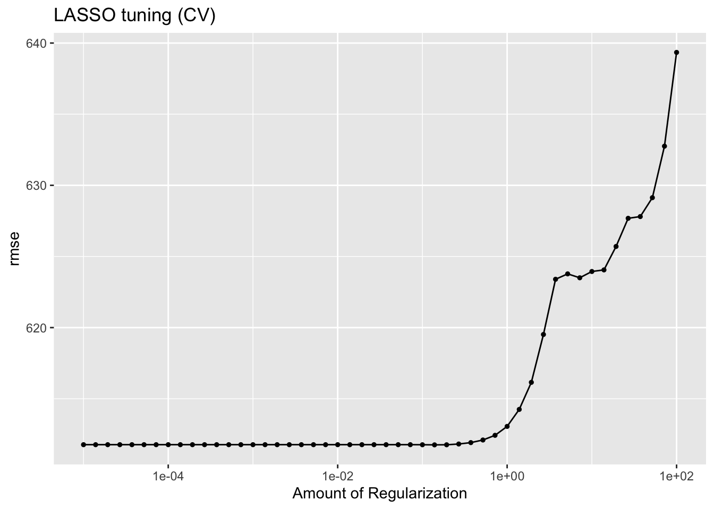
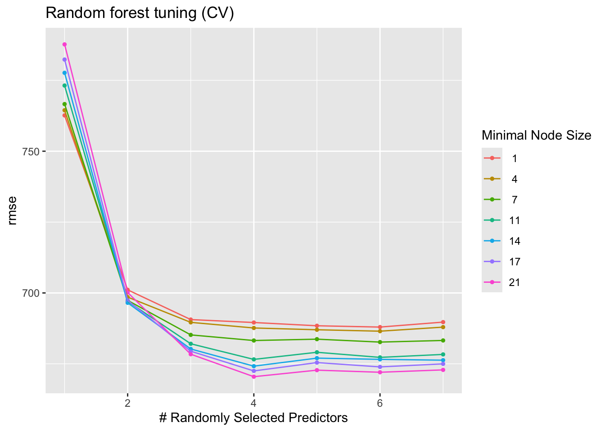

-- Attaching core tidyverse packages ------------------------ tidyverse 2.0.0 --
v dplyr 1.1.4 v readr 2.1.5
v forcats 1.0.1 v stringr 1.5.2
v ggplot2 4.0.0 v tibble 3.3.0
v lubridate 1.9.4 v tidyr 1.3.1
v purrr 1.1.0
-- Conflicts ------------------------------------------ tidyverse_conflicts() --
x dplyr::filter() masks stats::filter()
x dplyr::lag() masks stats::lag()
i Use the conflicted package (<http://conflicted.r-lib.org/>) to force all conflicts to become errors
library(tidymodels)
-- Attaching packages -------------------------------------- tidymodels 1.4.1 --
v broom 1.0.10 v rsample 1.3.1
v dials 1.4.2 v tailor 0.1.0
v infer 1.1.0 v tune 2.0.1
v modeldata 1.5.1 v workflows 1.3.0
v parsnip 1.4.1 v workflowsets 1.1.1
v recipes 1.3.1 v yardstick 1.3.2
Warning: package 'infer' was built under R version 4.4.3
Warning: package 'parsnip' was built under R version 4.4.3
-- Conflicts ----------------------------------------- tidymodels_conflicts() --
x scales::discard() masks purrr::discard()
x dplyr::filter() masks stats::filter()
x recipes::fixed() masks stringr::fixed()
x dplyr::lag() masks stats::lag()
x yardstick::spec() masks readr::spec()
x recipes::step() masks stats::step()
library(GGally)library(glmnet)
Loading required package: Matrix
Attaching package: 'Matrix'
The following objects are masked from 'package:tidyr':
expand, pack, unpack
Loaded glmnet 4.1-10
LASSO RMSE drops as the penalty shrinks (approaching OLS). RF RMSE drops with higher mtry and lower min_n — both signals are misleading because we are evaluating on training data.
Scale for x is already present.
Adding another scale for x, which will replace the existing scale.

show_best(las_tune_cv, metric ="rmse", n =5)
# A tibble: 5 x 7
penalty .metric .estimator mean n std_err .config
<dbl> <chr> <chr> <dbl> <int> <dbl> <chr>
1 0.139 rmse standard 612. 25 21.0 pre0_mod30_post0
2 0.193 rmse standard 612. 25 21.0 pre0_mod31_post0
3 0.1 rmse standard 612. 25 21.0 pre0_mod29_post0
4 0.00001 rmse standard 612. 25 21.0 pre0_mod01_post0
5 0.0000139 rmse standard 612. 25 21.0 pre0_mod02_post0
# Random forest with CVrf_tune_cv <-tune_grid( rf_wf, resamples = cv_folds, grid = rf_grid, metrics =metric_set(rmse))autoplot(rf_tune_cv) +labs(title ="Random forest tuning (CV)")

show_best(rf_tune_cv, metric ="rmse", n =5)
# A tibble: 5 x 8
mtry min_n .metric .estimator mean n std_err .config
<int> <int> <chr> <chr> <dbl> <int> <dbl> <chr>
1 4 21 rmse standard 670. 25 21.0 pre0_mod28_post0
2 6 21 rmse standard 672. 25 21.3 pre0_mod42_post0
3 4 17 rmse standard 672. 25 21.4 pre0_mod27_post0
4 5 21 rmse standard 673. 25 21.1 pre0_mod35_post0
5 7 21 rmse standard 673. 25 21.9 pre0_mod49_post0
With proper CV both models’ RMSEs increase compared to the apparent results, giving an honest estimate of out of sample performance. LASSO often better than the RF, because the underlying signal is largely linear and RF’s earlier advantage was overfitting.